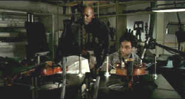

|
Red Violin,The/B+,A |
|
Universal/1999/133m/ANA 1.85 |
ISF Reference DVD Selection
This is very high-toned material, tastefully presented. The quintet of tales all arise from the birth of a very special violin in Cremona, Italy. They trace the path of the violin from tragic inception to auction, moving from Cremona to Vienna ,the capital of music, through the hands of gypsies in England and on to Mainland China in turmoil. The violin and tales finish at a Montreal auction house under the resonant control of the man with the gavel. It is difficult to maintain a consistency of storytelling quality through a film as ambitious as The Red Violin and even though it veers toward bathetic romance novel in one segment, the overall quality of the writing is outstanding.
|
 |
| Samuel Jackson oversees work on the red violin. ©Universal |
Director and writer Francois Girard weaves The Red Violin back and
forth in time, from the birth of the violin and back to the auction, repeatedly returning to the
auction during each segment and then to Cremona to unmask more of the mystery and history of the
violin. The structure provides pleasures and distractions. The complexity adds an overall chill to
the storytelling, but it solidly links each story to one another.
The acting is quite good. I liked watching Samuel L. Jackson in a very
different role. Jackson, playing the expert called
upon to value the violins for auction, always makes it look easy, but I thought he outdid himself
by holding back in The Red Violin. It’s a Jackson I like very much. Jason Flemyng playing
the flamboyant Fredric Pope is perhaps slightly too flamboyant in his performance for my taste. On
the other hand, Greta Scacchi’s fire plays great music in the Pope segment. Sylvia Chang is fine
as the politico with a violin in the back room and Carlo Cecchi as master violinmaker Niccolo
Bussotti adds great realism to the film. Co-writer Don
McKellar has a nice role as a violin technician and Colm Feore is perfect as the Auctioneer.
The Red Violin includes a brilliant score by modernist John
Corigliano. Classical violin compositions are woven seamlessly into the texture of the film, and
Corigliano’s chords add power and drama to the lovely film. Cinematography by Alain Dostie is
lush, with marvelous lighting for each segment. This is a beautiful production. Girard, who
co-wrote the script with actor Don McKellar, keeps extraordinary control over the sweeping
material.
There’s a striking variety of visual material in The Red Violin DVD.
Each era represented in the omnibus structure has its own subtle color palette and little scheme.
Appropriately, the most modern segment, featured around the elegant Montreal auction, has the
brightest and slickest looking visuals. Sharpness is consistently on the money. I was especially
fond on the range of color evident in so many ways. Look at the variety of facial tones. They are
wonderfully executed. The wood tones have exquisite variety. You can feel the life of the violins
through the visual range. Color is outstanding on The Red Violin. There is nothing more
dramatic than marching Red Guard Maoists in the China segment. The wood tones of the various
violins on display at the auction house are likewise a marvelous mélange of tone.
The sound is beautifully recorded on The Red Violin DVD. It’s
presented in both Dolby Digital 5:1 and DTS. I believe this is a DVD first. Both soundtracks are
outstanding. It is not possible to do an “on-the-fly” comparison of the two soundtracks, as the
encoding on this DVD does not permit switching audio without returning to the main menu. I played
several segments repeatedly in both DD and DTS. This is far from a controlled comparison. I am not
certain of the differences in the encoding of the DD and DTS tracks. Theoretically, DTS is
duplicated from the master tracks provided by the film source with no alterations. Does that differ
from the DD encoding? I am not certain. I can tell you that the DTS recording played at a greater
volume of four or five db. I checked this with a Radio Shack db meter to confirm my hearing. Radio
Shack and I appeared in concert. I tried raising the volume on the DD recording several times
that I played it, but this only made the comparison even more remote, though it was only a several
second process. Both recordings are beautiful. The DTS tracks seem to have slightly deeper bass
extension. Even the highs sounded more extended. Overall there was a greater feeling of range and
subtlety. The textures on the DTS cloth were more tactile, if you will. Given my simple and
certainly less than extensive testing, I would choose to watch this movie accompanied by the DTS
tracks. Let me emphasize that this opinion relates to this DVD only. Though, of the handful of DTS
movies I have watched and listened to, my immediate impression is that DTS raises the stakes a bit.
It’s difficult even doing a haphazard A-B comparison to determine which encoding sounds better.
The various languages in The Red Violin are all natively recorded .
White removable English titles appear over the image in all segments except the English ones on
this 1.85 anamorphic transfer. They are easy to read and do not distract from the visual
presentation.
|
The Feature Archive has articles ranging from John Ford to Blonde Bimbos, The Heistmasters,
Akira Kurosawa
and Frank Darabont. |
|
Imaging Science Foundation |
|
HOT LINKS The Home Theater Forum |
|
Home Theater Reference Reviewing System When you read a DVD review it's of utmost importance to know what equipment is being used to evaluate quality. Click on the projectors to find out more. |